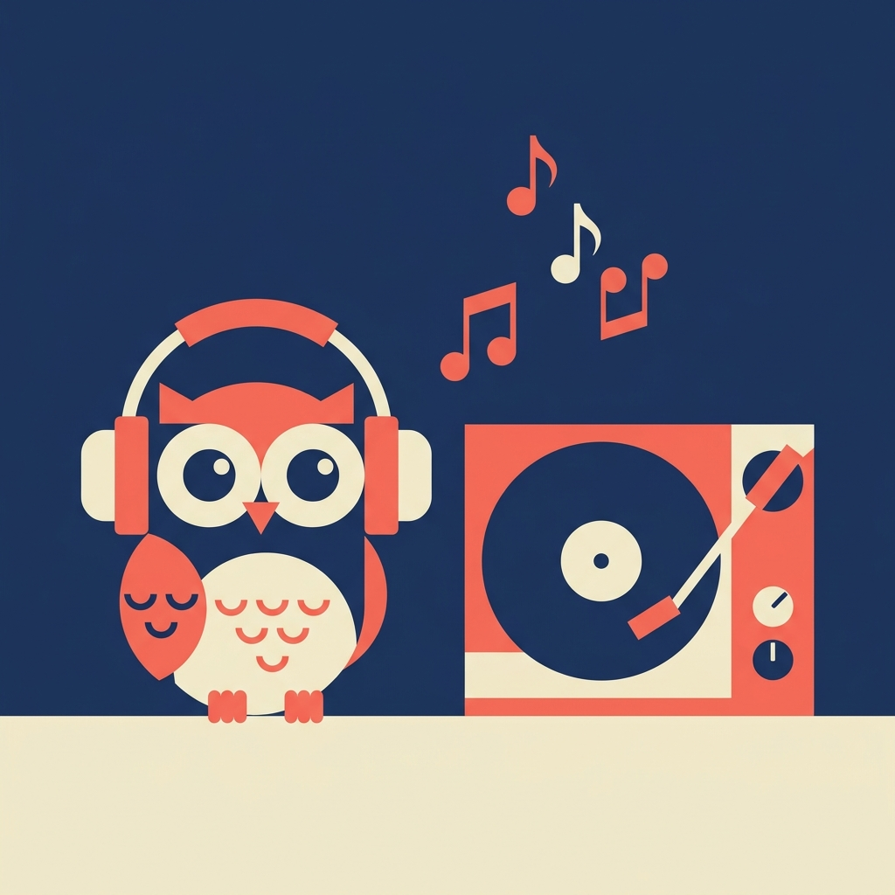
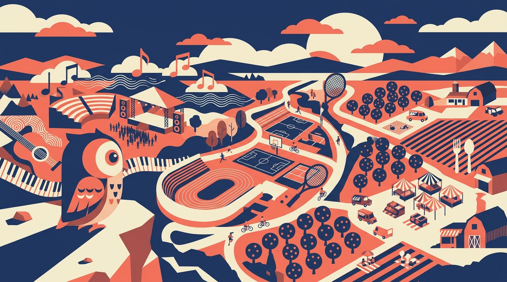
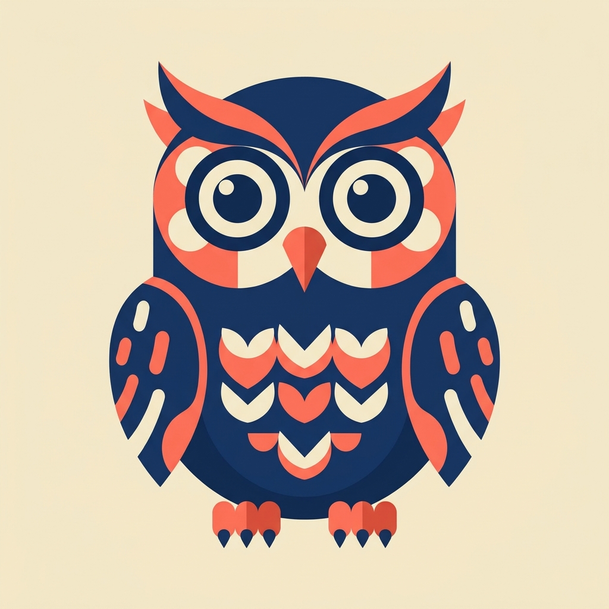
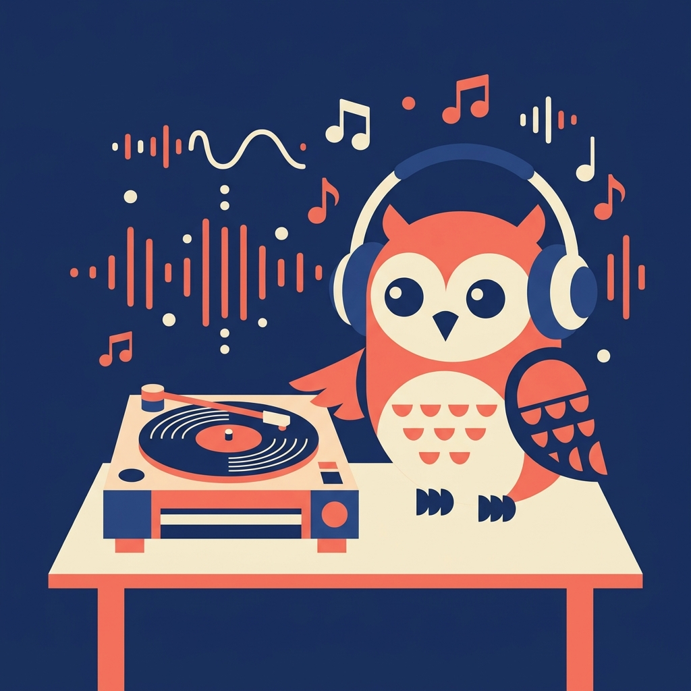
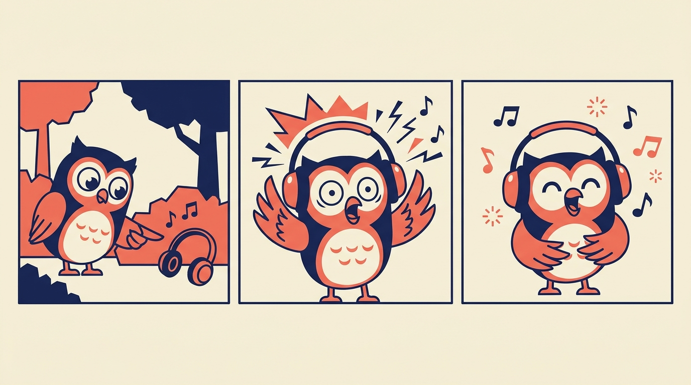

Müzik
Plak koleksiyonu ve farklı müzik türlerini keşfederek günün ritmini yakalamak en büyük tutkum.

Teknoloji, tasarım ve sanatın kesiştiği noktada yeni deneyimler üreten bir keşif yolculuğu.
Beni Tanıyın
Web ve yazılım dünyasına meraklı bir geliştirici olarak dijital projeler üretiyorum. Boş zamanlarımda müzik dinlemek, spor yapmak ve yeni lezzetler keşfetmek bana ilham veriyor. Burada hem kendimi geliştirdiğim alanları hem de ilgi duyduğum konuları sizlerle paylaşıyorum.

Plak koleksiyonu ve farklı müzik türlerini keşfederek günün ritmini yakalamak en büyük tutkum.

Hareketli ve aktif bir yaşam tarzını benimseyerek zihnimi ve bedenimi her zaman dinamik tutuyorum.

Farklı kültürlerin lezzetlerini tanımak ve mutfakta yeni tatlar denemekten büyük keyif alıyorum.
Benimle iletişime geçmek veya projelerimi incelemek için aşağıdaki bağlantıları kullanabilirsiniz.